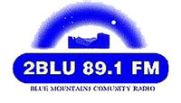

| | name // |
'Blu Noize', 2BLU FM, NSW.
| | creator // |
james and brian Kilby & Mackellar
| | project // | COMMUNITY RADIO
| |
Listen to an excerpt from the 'BLU NOIZE' programs in MP3 format, featuring musician Aiden Roberts.
We selected local artists from our demo competition and put together four programs focusing on each artist. We are also putting together a CD release of the artists. The programs include interviews with the artists and recordings of their music. The interviews focus on issues relevant to the particular artists and to youth in general (eg, advantages and disadvantages of living on the peripheral of the Sydney music scene, changes in the music scene due to technology, their future plans / dreams, and attitudes towards them by others due to their style of music, age, where they live, etc.)
Alot of the recordings of the artists are from the 'Nice Noize' all-ages music festival in Katoomba in July. Some of the artists featured are Aiden Roberts, Evan Jones, Jesse Sudich and Angus Stuart.
James and Brian's radio programs are being broadcast on community radio as part of noise and Amrap's community radio project. You can catch James and Brian's programs on 2 BLU FM in the Blue Mountains, NSW, as well as on the community radio satellite network.
noise has joined forces with Amrap - the Australian music radio airplay project, (a Commonwealth Government initiative that promotes and supports the significant role that community radio stations around the country play in supporting, developing, recording and broadcasting Australian music) to fund the production of a whole swag of new music programs and recordings. All the shows have been made by young community radio producers, 25 and under, about young Australian musos - who are also all 25 and under.
The range of music styles covered in the programs reflect the incredible diversity that exists on community radio throughout the country - from punk to country, classical to post-rock - with heaps in between.
The shows are being broadcast on community radio stations across the country by the producing stations as well as on the community radio satellite network - tune in for live band recordings, interviews with young artists and great new music.
| | date completed // |
/
/
| | preview // |

| | the file // |
 Download this MP3 Download this MP3
| | the URL // |
http://www.2blu.cjb.net
| | file size // |
1680068 bytes
|
|
|